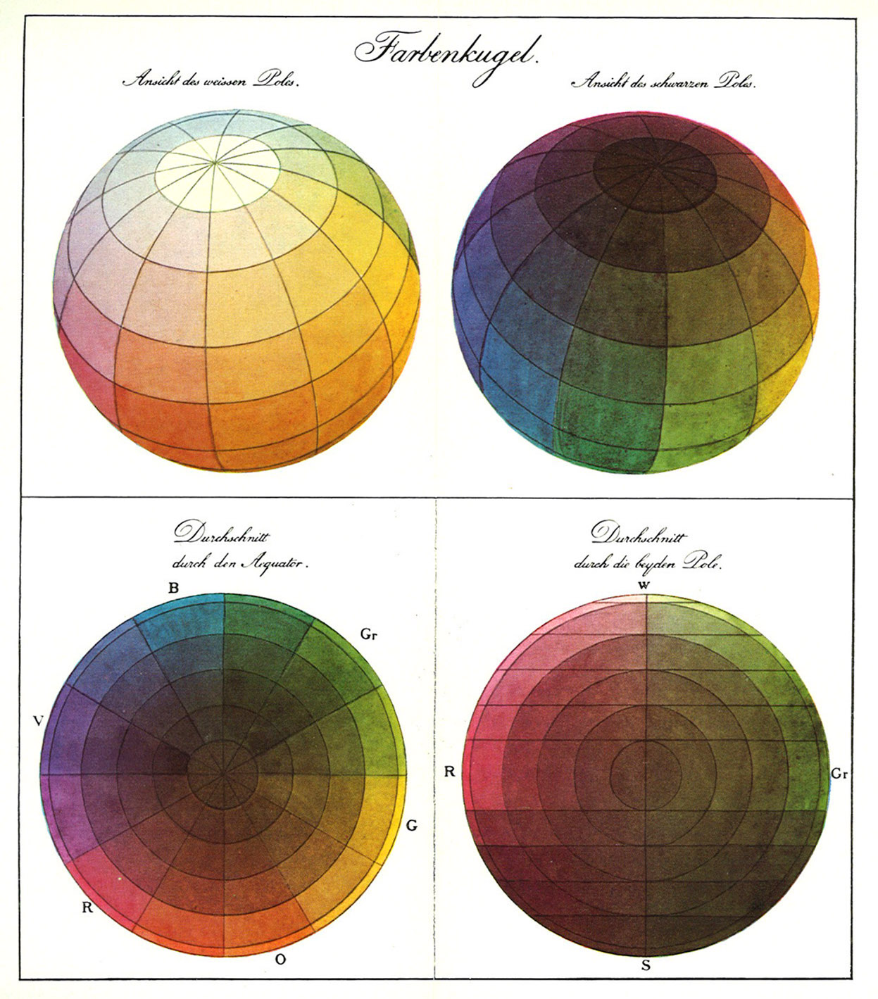
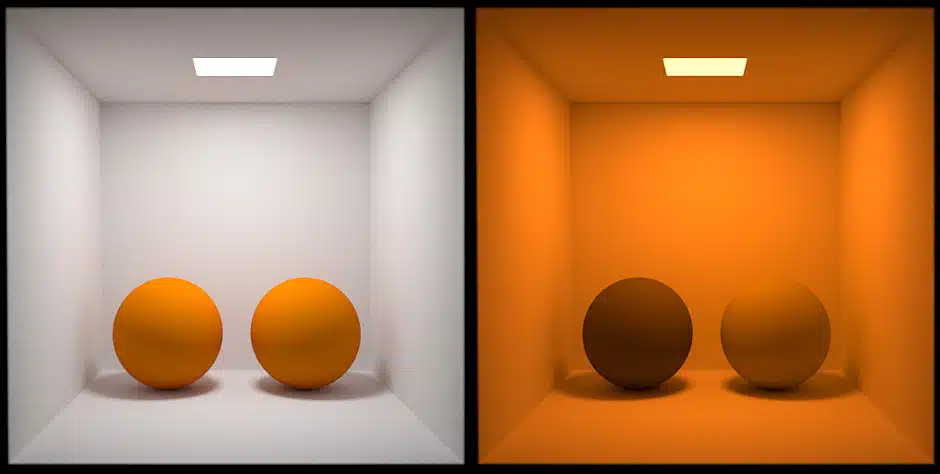
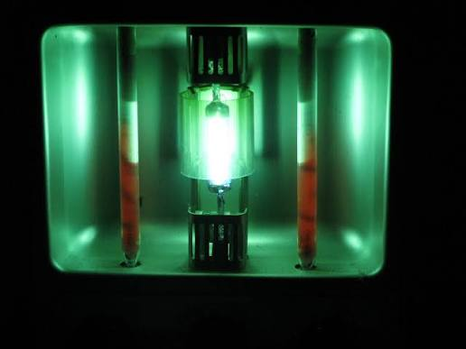

The Spectral Locus
This section introduces the spectral locus of visible colours.
1 · Spectra
Human vision responds to only a limited interval of the electromagnetic spectrum, conventionally approximated as 380 to 780 nanometres (nm). Shorter wavelengths are ultraviolet (UV), while longer wavelengths are infrared (IR). The detectable range varies among animals. Many birds, reptiles, fish and insects detect ultraviolet wavelengths that humans cannot see, so what counts as visible depends on the visual system.
Radiant power is the rate at which light carries energy. It is measured in watts (W), where one watt is one joule per second. A source’s spectral power distribution \(P_\lambda(\lambda)\) describes how that power is distributed across wavelengths. Its unit is watts per nanometre (W/nm), and the area over a wavelength interval gives the radiant power within that interval:
\[\Phi_e=\int_{\lambda_1}^{\lambda_2}P_\lambda(\lambda)\,d\lambda.\]
The curves below compare spectral shapes rather than absolute power. Each has been divided by its highest value within the displayed 380–780 nm interval, so the vertical axis has a peak of one and no physical unit.
The graph stops at 780 nm. For a candle at 1,800 K, the curve continues through the infrared and reaches its maximum near 1,600 nm before falling. Most of its radiant power becomes heat when its infrared radiation is absorbed.
Sunlight, a candle and a display pixel can all look pale or white while having quite different spectral power distributions. The liquid-crystal display (LCD) curve has this shape because a white pixel turns on all three subpixels. The narrow blue peak comes from the blue light-emitting diode (LED) in the backlight. A coating inside the display absorbs part of that blue light and re-emits it spread across the green-to-red range, and the green and red subpixel filters cut that spread into the two separate humps. This curve is illustrative (peaks vary between displays).
The spectrum reaching the eye depends on both the illumination and the surface:
\[P_{\text{eye}}(\lambda) = P_{\text{illuminant}}(\lambda)\,R_{\text{surface}}(\lambda).\]
\(R_{\text{surface}}\) is the fraction reflected at each wavelength.
Each line is drawn in the colour its spectrum would produce: the lamp a warm near-white, the surface a red, and the light it sends to the eye the same red made darker, because the surface absorbs most of the lamp’s light.
2 · Trichromacy
The capacity to discriminate wavelengths from each other requires a comparison between multiple types of photoreceptors; a single cone cannot report which wavelength caused its response (the principle of univariance). Human daylight colour vision depends on three cone classes: S, M and L. Their labels mean short-, middle- and long-wavelength sensitive.
All three types of cone have broad, overlapping sensitivities. Two classes can respond strongly to the same wavelength. The response of cone class \(i\) is approximately:
\[q_i = \int P_{\text{eye}}(\lambda)\,s_i(\lambda)\,d\lambda,\]
where \(P_{\text{eye}}\) is the incoming spectrum and \(s_i\) is that cone class’s sensitivity curve.
Early vertebrates had four cone classes, and many birds, reptiles and fish keep all four today. Early mammals, mostly nocturnal, lost two of them. Most mammals are still dichromats, including dogs, cats, and horses. Primates (including humans) are an exception, sharing a mutation that restored a third cone class. The fourth class in birds, reptiles and fish is sensitive into the ultraviolet. Many insects are trichromats, including honeybees, whose colour vision has driven the evolution of colourful flowers.
The incoming spectrum is converted by photoreceptors into a tuple of three values corresponding to the S, M and L responses. These are recombined by retinal ganglion cells into three signals that travel to the brain: a luminance signal based on the combined response of L and M; and two opponent signals, L compared against M (red versus green) and S compared against L and M (blue versus yellow). Schematically,
\[ \begin{aligned} \text{luminance-like} &: \quad L+M \\ \text{red-green-like} &: \quad L-M \\ \text{blue-yellow-like} &: \quad S-(L+M) \end{aligned} \]
This means that the brain’s perception of a colour is also a tuple of three values — luminance, red-green and blue-yellow — rather than S, M and L. Either tuple can be computed from the other, so both describe the same three-dimensional space. The figure below is built with the plotly library from the corner coordinates of the cube.
corners = {
"black": (0, 0, 0), "red": (1, 0, 0), "green": (0, 1, 0),
"blue": (0, 0, 1), "yellow": (1, 1, 0), "cyan": (0, 1, 1),
"magenta": (1, 0, 1), "white": (1, 1, 1),
}
cube_edges = [
("black", "red"), ("black", "green"), ("black", "blue"),
("red", "yellow"), ("red", "magenta"),
("green", "yellow"), ("green", "cyan"),
("blue", "cyan"), ("blue", "magenta"),
("yellow", "white"), ("cyan", "white"), ("magenta", "white"),
]
fig = go.Figure()
for a, b in cube_edges:
fig.add_trace(gradient_line(a, b))
fig.add_trace(gradient_line("black", "white")) # the luminance diagonal
fig.add_trace(gradient_line("blue", "yellow")) # a cube diagonal
fig.add_trace(gradient_line("red", "green")) # a face diagonal
fig.add_trace(markers(corners)) # eight labelled corners
# Every edge and diagonal interpolates between its endpoint colours.This space wraps the two far ends of the spectrum, creating the colour “wheel”. As a combination of red and blue, purple corresponds to no wavelength, rather it corresponds to an absence of the middle wavelengths of light, when both extremes are still present.
A colour’s position along the black-to-white diagonal axis is its luminance. Its angle around the axis of red, yellow, green and blue is its hue. Its distance out from the axis of greys is its saturation: the further from grey, the more vivid the colour. Greys on the axis have no hue at all and are called achromatic; everything off the axis is chromatic to some degree; monochromatic (spectral) hues are maximally saturated.
Below is the same space in spherical coordinates, with a single colour picked out as an arrow from the origin. Drag the scene to rotate, and scroll or pinch to zoom.
In this system, hue moves the point around the grey axis, luminance moves it between the lower and upper hemispheres, and saturation moves it away from the grey axis. The concept of a colour sphere was first introduced by the painter and theorist Philipp Runge in 1807.

The visual system also adapts to illumination, uses surrounding context, and compares signals across space and time. The same retinal input can contribute to different appearances in different situations. Consider the example below, where both centre squares below use the same grey colour pixels. If they appear to be different shades, it is because the surround changed the visual system’s comparison.
This is important for visualisation since every colour is seen against neighbours, backgrounds and display conditions.
3 · Luminance
Radiant flux is the optical power carried by radiation, measured in watts (W). Other radiometric quantities describe how that power is distributed:
- Radiant intensity (W/sr): flux per unit solid angle.
- Irradiance (W/m²): flux arriving per unit area.
- Radiance (W/m²/sr): flux per unit projected source area and per unit solid angle in a specified direction.
- Spectral radiance \(L_{e,\lambda}(\lambda)\) (W/m²/sr/nm): radiance per unit wavelength interval.
Spectral radiance gives the wavelength distribution of radiance. Brightness, by contrast, has no meter and no unit. It is the subjective counterpart of radiance: how much light an area appears to emit or reflect, affected by adaptation, surround, area and colour.
Luminance adjusts the objective spectral radiance measure according to the the standard photopic function \(V(\lambda)\), a curve that measures the apparent radiance of wavelengths for human observers in daylight conditions, based on measurements made in the 1910s and 1920s. The measurements were compiled by Gibson and Tyndall at the US National Bureau of Standards, and the curve became an international standard in 1924.
The graph below shows \(V(\lambda)\): the contribution of each wavelength to luminance per unit of radiant power.
For a complete spectrum, apply that weighting at every wavelength and add the results:
\[L_v=K_m\int L_{e,\lambda}(\lambda)V(\lambda)\,d\lambda,\]
Here \(L_{e,\lambda}(\lambda)\) is the spectral radiance, \(V(\lambda)\) is the dimensionless wavelength weighting, \(d\lambda\) means summing across wavelength bands, and \(K_m\approx683\ \mathrm{lm\,W^{-1}}\) converts radiometric watts to the SI photometric scale. The result \(L_v\) is reported in candela per square metre (\(\mathrm{cd\,m^{-2}}\)), the unit used to specify display brightness.
\(V(\lambda)\) weights 580 nm at about 0.87 and 445 nm at about 0.03, so equal-power beams at those wavelengths contribute luminance in a ratio of about 29 to 1. On a display, full yellow has higher luminance than red , green , blue , cyan or magenta because its red and green subpixels are both on; only white , with all three on, is higher. The L and M cones that perceive luminance are most sensitive to the highest-energy region of the spectrum of sunlight at the Earth’s surface.
No hue has a fixed luminance, because luminance depends on radiant power as well as spectral composition. Among equal-power monochromatic lights, luminance per watt is greatest at 555 nm, which looks yellow-green. Daylight determines the visual state being measured. The luminance signal sums the L and M responses, and their sensitivity curves, peaking near 565 and 535 nm, overlap most strongly in between.
4 · Metamerism
The eye and brain reduce a light’s complete spectrum to three numbers. Two lights can therefore have different power at many wavelengths but still produce the same S, M and L totals. Under fixed viewing conditions they then match in colour. Such lights are called metamers.

A screen’s red-plus-green mixture and a monochromatic yellow light are a familiar example. Their spectra differ, but the mixture can be adjusted until both produce the same three cone responses.
In the example below, a sampled spectrum contains 401 power values, one for each wavelength from 380 to 780 nm, but the cone model reduces those values to three sums. That leaves many ways to alter the spectrum without altering any of the three results.
Write the three cone calculations as a matrix \(M\). We construct a non-zero spectral change \(d\) for which
\[Md=0.\]
Starting from one spectrum \(p\), add and subtract that change:
\[M(p+d)=Mp+Md=Mp, \qquad M(p-d)=Mp-Md=Mp.\]
The two spectra differ, but their S, M and L responses are identical. The change is kept small enough that both spectra remain non-negative.
Colour matching
In a colour-matching experiment, an observer views a split field. One half contains a target light; the other contains a mixture of three primary lights. The observer adjusts the power of the primaries until the two halves match. The three recorded amounts specify the target relative to those primaries.
The experiment can be reproduced on screen, with RGB channel values standing in for the three primary lamps. Overlapping lights add: red plus green looks yellow, green plus blue looks cyan, red plus blue looks magenta, and all three at full power look white. The circle on the left is a fixed target; the three lamps on the right are stacked almost on top of each other, so their combined light fills the centre and each lamp’s own strength shows only at the rim. Adjust the sliders until the centre matches the target:
William Wright and John Guild independently repeated this procedure around 1930. They presented one monochromatic target wavelength at a time, repeated the matches across the visible spectrum and combined the results from multiple observers. Each target wavelength produced three numbers: the amounts of the red, green and blue primaries needed for the match. Plotting those amounts against wavelength produced three RGB colour-matching functions.
The three primary wavelengths had to be narrow, stable and reproducible. An electric discharge through mercury produces several strong spectral lines at fixed wavelengths. A filter or monochromator can isolate one of those lines as a nearly monochromatic beam. Mercury lamps therefore provided laboratories with bright reference wavelengths that could be reliably reproduced.

The International Commission on Illumination
The CIE, from its French name, Commission Internationale de l’Eclairage, was founded in 1913 as the international standards body for light and lighting. In 1924 it standardised the \(V(\lambda)\) wavelength weighting used to place luminance measurements on a common basis. In 1931 it standardised colour matching, turning two sets of matching experiments, by William Wright and John Guild, into an agreed reference that any laboratory could reproduce.
The CIE established a common RGB system with reference primaries at 435.8, 546.1 and 700.0 nm. The 435.8 and 546.1 nm references were chosen because they are strong, reproducible mercury lines. The 700 nm reference was placed in the far red, where perceived hue changes very little with wavelength. The CIE then transformed RGB matching results into the mathematical coordinates X, Y and Z.
5 · Chromaticity
Chromaticity describes the relative balance among a light’s three colour-matching responses after their overall magnitude has been removed. Two lights have the same chromaticity when their three response values are in the same proportions, even if one has much greater luminance than the other.
In the CIE XYZ (1931) system, \(Y\) carries the standard photopic luminance quantity (\(\bar{y}\) is exactly the luminosity function from section 3). \(X\) and \(Z\) retain the other two independent dimensions needed for a colour match once \(Y\) has been tied to luminance. \(\bar{x}(\lambda)\) specifies how strongly each wavelength contributes to \(X\); \(\bar{z}(\lambda)\) does the same for \(Z\). The point x = y = 1/3 is the equal-energy point a perfectly flat spectrum (from dim grey to pure white).
For a spectrum \(P(\lambda)\):
\[\color{#D62728}{X=\int P(\lambda)\bar{x}(\lambda)d\lambda},\quad \color{#009B77}{Y=\int P(\lambda)\bar{y}(\lambda)d\lambda},\quad \color{#173B7A}{Z=\int P(\lambda)\bar{z}(\lambda)d\lambda}.\]
Chromaticity coordinates give the proportions:
\[\color{#D62728}{x}=\frac{X}{X+Y+Z},\qquad \color{#009B77}{y}=\frac{Y}{X+Y+Z},\qquad \color{#173B7A}{z}=\frac{Z}{X+Y+Z}=\color{#173B7A}{1-x-y}.\]
Only two coordinates are needed because the three proportions sum to one. Move your pointer across the upper chart below and watch the three matching values turn into the two coordinates: the vertical rule reads \(\bar{x}, \bar{y}, \bar{z}\) off the official curves, and the readout divides each by their sum. This traces the spectral locus in \(xy\) space, shown in the lower chart.
Below about 400 nm and above about 700 nm the matching functions fall to zero, so light there produces no colour response and has no chromaticity to plot. The ends also stop moving before they vanish: toward each end of the spectrum the three matching functions decay in nearly fixed proportion, so the ratios x and y stop changing and the last stretch of spectrum piles up at a single point.
Colour mixing
Adding two lights adds their spectra. Because XYZ is linear, their XYZ values add too. After normalisation to xy, the mixture lies on the straight segment joining the two chromaticities, sliding along it as the relative amounts change: the chord between two lights is a gradient of every colour the pair can mix.
In the following figure, move the two wavelength sliders to select the component lights. Their points move along the spectral locus, and the chord shows the colours produced by mixing them in different proportions. Can you find the color produced at \((\frac{1}{3}, \frac{1}{3})\), the equal-energy point E?
A general spectrum is a non-negative mixture of wavelength components, so its chromaticity lies in the convex region bounded by the spectral locus and the straight line of purples. Purples are on that closure because they mix light from opposite ends of the visible spectrum and do not correspond to any particular wavelength.
6 · Gamut
The matching functions from the original CIE XYZ system were based on three lamps with wavelengths 700 nm, 546 nm and 436 nm. The set of lights a group of lamps can produce has a simple shape on the chromaticity diagram. Two lamps mix along the straight chord between their two points, as in the previous figure. Three lamps fill the triangle whose corners are the three lamp points: every positive mixture lands inside it.
The region a set of primaries can reach is called its gamut. Below is the gamut of the three experimental lamps, drawn inside the locus.
Negative Red
Targets in the blue-green range lie inside the locus but outside the lamp triangle, so no positive mixture of the three lamps reaches them. The experimenters’ solution to this problem was to move the red lamp across so it shines on the target half of the color-matching field, desaturating the target until the other two lamps could match it. The contribution of the moved lamp was then recorded as a negative amount. On the diagram, adding red to the target slides the target’s point along a straight line toward the red corner. Once the point crosses the green-blue edge, the remaining two lamps can reach it.
The simulator below repeats the measurement for a 490 nm blue-green target, with the geometry in view. The three sliders are the red, green and blue lamps. On the black field, the top cluster is the target side and the bottom cluster is the lamp side, and overlapping lights add just as they did in the matching experiment above. Adjust the lamps until the difference readout drops below 0.05. The point on the diagram is the chromaticity of your current lamp mixture. Dragging the red slider below zero moves the red lamp across to the target side, where the point leaves the triangle to reach a target outside any positive mixture of the three lights.
Observers repeated this measurement for every target across the spectrum. Plotting the three lamp settings against target wavelength gives the three RGB colour matching functions. The red curve dips below zero across the blue-green range: every point of that dip is a match that needed the red lamp moved to the target side.
Colour displays
The CIE XYZ system was the basis for the design of the first colour screens. A cathode ray tube fires three electron beams at a glass face coated with dots of three phosphors, materials that glow red, green and blue where the beams strike. sRGB (Hewlett-Packard and Microsoft, 1996) standardised the numbers that drive those three primaries. It fixes the three primary chromaticities and a white point, and stores each channel in one 8-bit byte, 0 to 255. Written in hexadecimal, the three bytes become the six-digit codes: rgb(255, 128, 0) is #FF8000. sRGB remains the standard for defining colour, although cathode ray tubes were soon superseded by LCD technology. Sixteen-colour screens go back to the CGA (Color Graphics Adapter) and EGA (Color Graphics Adapter) of the early 1980s; exact values still used on the web today come from the Windows VGA (Video Graphics Array) palette, adopted by HTML as its first named colours.
The sRGB byte values are not proportional to light output. The eye is better at telling dark shades apart than bright ones, so sRGB assigns more of its 256 steps to the dark end. A pixel at 128 emits about a fifth as much light as one at 255. The function that converts between stored values and emitted light is called the display gamma. It is one scalar curve applied to each of the three channels separately. With \(c\) the linear light in a channel, scaled to the range 0 to 1, the stored value is \(255\,f(c)\), rounded, where
\[f(c)=\begin{cases}12.92\,c & c\le 0.0031308,\\ 1.055\,c^{1/2.4}-0.055 & c>0.0031308.\end{cases}\]
The short linear piece near zero exists because the power law alone has infinite slope at the origin; decoding inverts the same two pieces.
The sRGB standard prescribes a 2.4 exponent. The linear segment near zero causes the curve to more closely track an exponent of 2.2, which is why “gamma 2.2” is a number often quoted for ordinary screens, although this can vary.
Compare gamuts
Every screen technology places its primaries differently and covers a different triangle. Draw these gamuts to compare them against the spectral locus. SCREEN_GAMUTS in the cell below gives the (x, y) coordinates of the red, green and blue primaries of four standards. Draw the spectral locus, then add one triangle per standard with a legend naming it. Everything else you need has already appeared on this page.
Remember that this page reaches you through your own monitor, so the most saturated colours here are themselves approximations!
When your chart shows all four labelled triangles over the filled locus, export it as an image: use the menu in the chart’s top right corner and choose Save as PNG, or take a screenshot of the chart. Submit the image through Canvas.
7 · Summary
Colour is a useful but conditional encoding channel.
- Hue is effective for distinguishing a modest number of categories; it has no natural numerical order.
- Lightness can carry order when it changes monotonically.
- Chroma changes emphasis but supports only coarse comparisons.
- Equal steps in RGB or HSL are not equal perceptual steps.
- A palette must be tested against its actual background, at its actual mark size, and under relevant colour-vision differences.
- Important distinctions need a redundant cue such as position, direct labelling, shape or line style.
- A display’s three primaries reach only the triangle between them, its gamut; colours outside it can only be approximated.
Sources
- CIE, CIE 1931 2° colour-matching functions, DOI
10.25039/CIE.DS.xvudnb9b. The table is served with this page asCIE_xyz_1931_2deg.csv, unmodified. - Kalloniatis and Luu, Color Perception, Webvision.
- NIST, CIE Fundamentals for Color Measurements, for the Wright–Guild experiments, reference primaries and CIE 1931 transformation.
- NIST, Strong Lines of Mercury, for the wavelengths and relative intensities in the mercury spectrum.
- NIST, Realization of the Candela, for the definition and experimental basis of \(V(\lambda)\).
- CIE, Luminance, for the definition of luminance as luminous intensity per projected area in a specified direction.
- CIE, Chromaticity, for the standard definition of chromaticity as a property of a colour stimulus.
- US Department of Energy, A Practical Primer to LED Technology, for semiconductor band gaps and LED emission.
- Nobel Prize, Efficient blue light-emitting diodes, for the development of GaN-based blue LEDs and phosphor-converted white light.
- Hewlett-Packard and Microsoft, A Standard Default Color Space for the Internet—sRGB, for the 1996 proposal, Rec. 709 primaries, D65 white point and CRT-based transfer curve.
- W3C, CSS Color Module Level 4, for the interpretation of RGB and hex notation as sRGB coordinates.